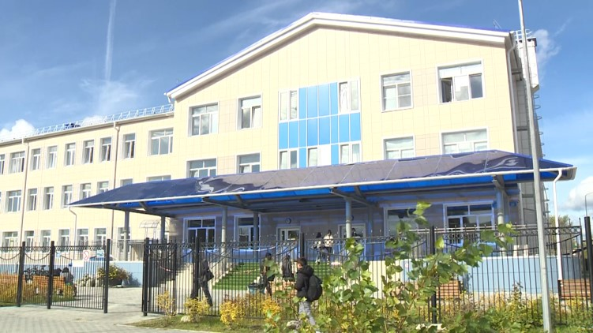

Отчет по практики ПМ.04 Веб-дизайн и разработка
Место прохождения: БУ "Югорский Политехнический Колледж" 
В 2000 г. в соответствии с постановлением Главы г. Югорска от 28.06.2000 г. № 381 было создано Муниципальное образовательное учреждение среднего профессионального образования «Югорский индустриальный техникум».
Приказом Департамента по управлению государственным имуществом ХМАО – Югры № 13-Р-437 от 21.03.2014 учреждение переименовано в бюджетное учреждение профессионального образования Ханты-Мансийского автономного округа - Югры «Югорский политехнический колледж».
На главную
Далее